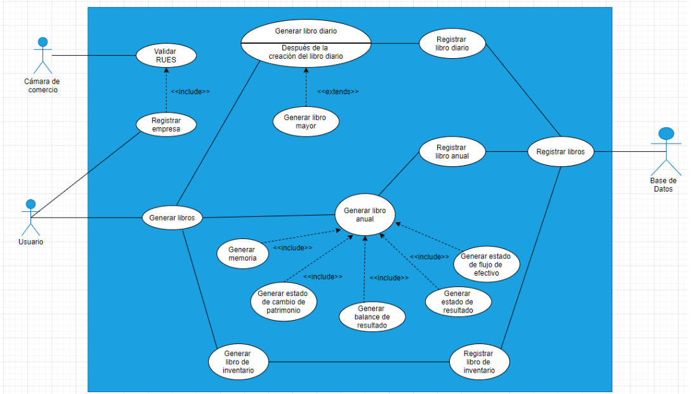
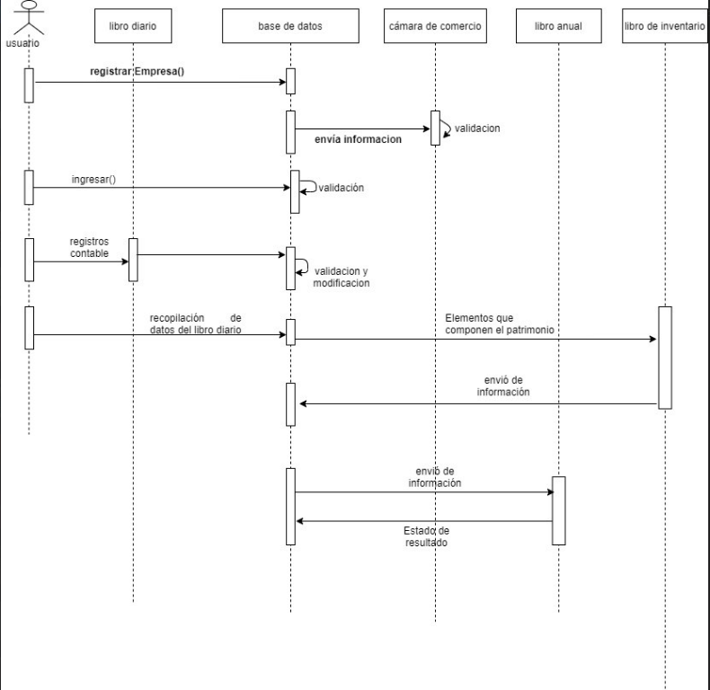
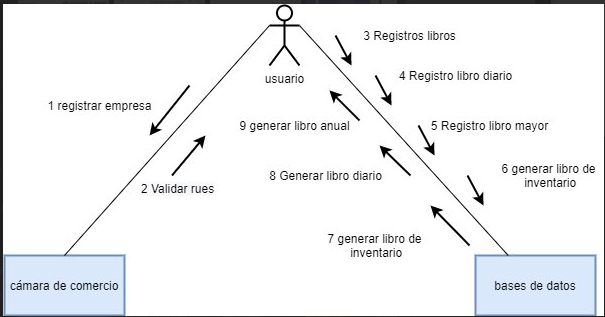

Diagramas UML

Lenguaje de Modelado Unificado con Respecto al Proyecto My Fincancial Book
UML Lenguaje de Modelado Unificado
El Lenguaje de modelado unificado provee herramientas de diagramación para que los procesos tanto internos como externos sean claros entre el equipo de trabajo para el desarrollo correcto del Software.
Diagramas de Casos de Uso
Acá se establecerán los diagramas de casos de uso del proyecto para la correcta.
Casos de Uso Documentación
| Caso de Uso | Sistema My Financial Book |
|---|---|
| Descripción | Registrar y documentar los libros contables de la empresa que hace uso del sistema, para llevar un control adecuado de las finanzas. |
| Precondición | La empresa debe estar debidamente registrada por la cámara de comercio (RUES) para evitar empresas fantasmas. |
| Postcondición | El usuario puede tener acceso a los libros contables en el momento requerido, así como también modificarlo hasta cierto punto |
Secuencia Normal
| Paso | Acción |
|---|---|
| 1. | El usuario registra la empresa en el sistema contable. |
| 2. | La cámara de comercio verifica y valida si la RUES(El identificador único de la empresa) es correcta o existe. |
| 3. | Una vez la empresa esté registrada, puede generar sus libros contables como son:el libro anual, libro de inventario y el libro diario. |
| 4. | Cuando el usuario registre los libros contables, se guardan automáticamente en la base de datos. |
Excepciones
| Paso | Acción |
|---|---|
| 2. | La RUES presentada no es válida |
| 3. | La información no esté completa o haya errores de cálculo. |
Diagrama de Secuencia
Diagrama de Comunicación (Colaboración)
Diagrama de Actividades